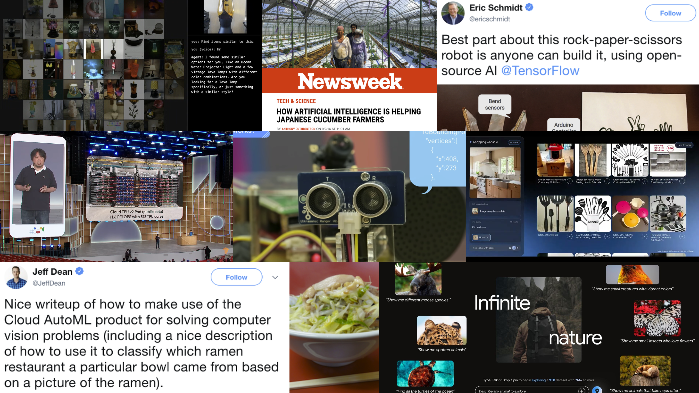

Kaz Sato (佐藤 一憲)
Kaz Sato, a Staff Developer Advocate from the Cloud AI team, has authored over 25 ML/AI blogs and demos for Google Cloud's official blog. His work has garnered attention from Jeff Dean and Eric Schmidt, and been featured in Newsweek and The New Yorker. He's a regular speaker at Google I/O and Cloud Next, and has presented internationally in 17 countries. Kaz also shares ML/AI updates with his 23,000+ X followers.
Featured Demos, Talks & Articles
AI agents, Vertex AI Vector Search 2.0, Gemini Live API, and hardware synthesis.
No items match this filter.
All Publications (2026 & 2025)
Every blog post, video, codelab, workshop and code sample published in 2026 and 2025. Earlier years are in the README archive.
Keynotes & Speaking Events
Conference appearances and technical keynotes